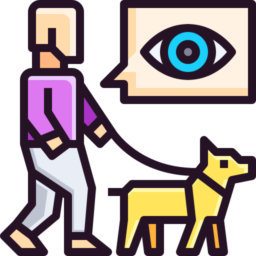
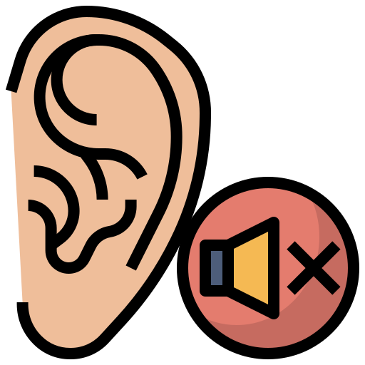
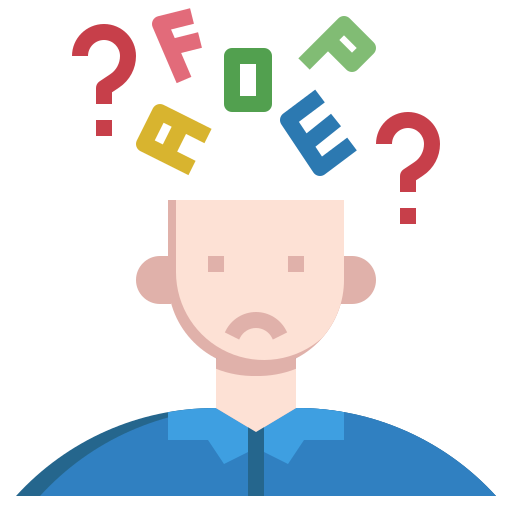

C'est quoi un handicapé ?
Une personne handicapée est une personne comme vous et moi qui a un handicap. Il existe deux types d’handicap, ceux qui sont visible et ceux qui sont invisible.

ok
Handicap visible, c’est quoi ?
Parmi ceux qui se voient, on retrouve notamment les handicaps moteurs (paralysie...)
Leur origine est soit génétique, soit c’est la conséquence d’un accident. Si on qualifie de visible cet handicap c’est parce que les personnes concernés ont une façon de marcher différente où utilise du matériel comme des chaises roulantes.
Handicap invisible, c'est quoi ?
Les handicaps invisibles sont beaucoup plus nombreux et généralement moins connus. Les premiers qui me viennent en tête sont les handicaps intellectuels, aussi appelés les troubles cognitifs. Les personnes touchées ont des problèmes de mémoire et des difficultés à s’adapter, à prendre des décisions et à planifier.

Malheureusement cet handicap est très peu connu... Viennent ensuite les handicaps visuels avec une obstruction partielle ou totale de la vue.
Les handicaps auditifs, donc les personnes qui sont sourde ou malentendantes.
Viennent ensuite handicaps psychiques, comme le retard mental ou le trouble de la personnalité. Enfin, il y a les handicaps provenant de maladie génétique comme l’asthme, la dyslexie ou la mucoviscidose…
Il y a un handicapé dans ma classe, que faire ?
Si vous avez un handicapé dans votre classe, la première chose à faire et d’aller lui parler. Je sais que cela peut sembler difficile, car bien souvent on ne connait pas la maladie, mais il faut toujours avoir en tête que cette personnes ne va pas se fâcher, ni chercher à vous prendre de haut.
Son handicap ne l’empêche pas d’être sympathique, marrante, intéressante et une amitié pourra même se créer. Alors oui, vous n’allez pas non plus faire du vtt avec mais, lors des repas ou des intercours, parler avec sera agréable.